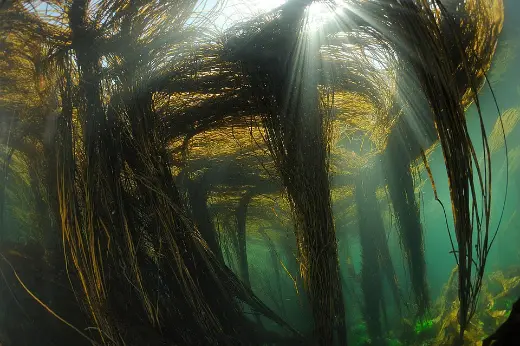

Main course · Popular in Connacht and Munster
Sea spaghetti carbonara
Sea spaghetti carbonara is made with wild sea spaghetti, a favourite in Connacht and Munster.

How do you make sea spaghetti carbonara?
Blanched sea spaghetti tossed with bacon, egg and cheese.
Wild ingredients
- Sea spaghetti (Himanthalia elongata): in season April to July
Watch the recipe

Video: Seth Hughes on YouTube